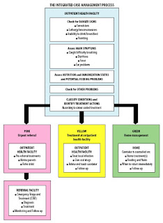

Life and Death, Rules and RuleFlow
Yesterday I told a friend what I do for a living, and she’s still in shock. I don’t think the words ‘grabbing people’s brains and shoving them into a PC‘ was the most tactful explanation. I wouldn’t recommend explaining Rules and RuleFlow to your boss in those terms either. Unless they already think you’re some sort of Frankenstein and you have best friend called Igor.
A better way might be to use the workflow example from the recent IJTC conference. It explains the importance of Rules and Ruleflow in a way that even your boss can understand. Strangely enough for a Drools blogpost, you don’t even need a computer to understand it;
The Health services in Bangladesh (like many elsewhere) can’t get enough doctors. Training more is not a solution ; those that do qualify tend to leave for higher rates of pay elsewhere. So, given the desparate need for trained medical staff in rural areas(to curb child mortality rates), what are health workers to do?
The solution that the Health workers came up with was IMCI – or Integrated Management of Childhood Illness. It takes what the Knowledge in Doctor’s head’s and writes it down as a simple guide that health workers can follow. When a sick child is brought into the remote clinic the health worker is able to follow the simple step-by-step instructions to make quite a sophisticated diagnosis.
I’ve no medical training beyond simple CPR (and if you’re relying on that then you’re in real trouble) but even I can understand it.

That’s Rules and RuleFlow.
- Rules are ‘when something is present , then do this’. And not just single rules, but many of them. Together, loads of simple rules allow you to come up with quite a sophisticated diagnosis.
- Ruleflow allows you to group your rules. If you’re a health worker with a sick child you want to do the most important checks first. Depending on the outcome, you then apply the next set of medical rules: Pink if they need urgent referral to the hospital, yellow if the clinic can cope , or green if the child can be looked after at home.
As gory as it sounds, everybody, including the doctors, are happy that their ‘brains have been put into a PC‘ (or in this case , a set of paper cards). The Doctors are happy because they can (guilt free) move to better paying jobs. The medical workers using the system are happy because they can help the sick children that they see every day. And the children gain because the better availability of medical knowledge (via Rules and RuleFlow) is literally the difference between life and death.
Paul Browne also writes on the People and Technology blog.

{kind=link}